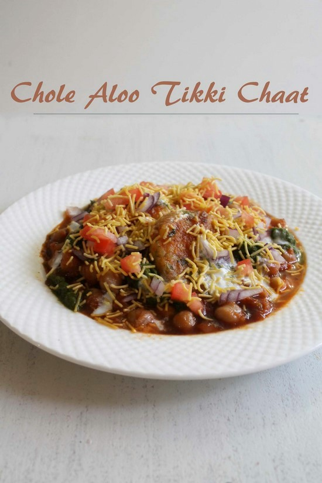

tikki-chat!

lets learn to make spicy sweet and tangy aloo chole tikki chat
Ingredients -
- Aloo tikki
- Punjabi chole
- chutneys
- dahi
- bhujiya
- ps. in the end sprinkle some chaat masala and finely chopped coriander leaves.
Directions -
- Boil the potatoes
- Mash the boiled potatoes
- add peas in a bowl
- Mash both together
- Add finely chopped green chilies, cilantro, red chili powder, chaat masala and salt.
- Squeeze fresh lemon juice. Mix everything together.
- Divide the mixture into 6 equal portions and make patty out of it.
- Heat the skillet on medium heat for shallow frying.
- Add few teaspoons of oil. Once oil is medium hot, put the tikkis gently and carefully on the pan.
- Drizzle some oil on tikki as well. Cook till bottom side is brown and crispy.
- Once cooked, flip the tikkis using spatula and let it brown other side as well.
- Remove it to a plate and keep it aside.
- Warm up the leftover chole in microwave.
- Also prep other elements for making chaat like onion, tomato, yogurt and both chutneys.
- Arrange 3 aloo tikki in a plate
- Pour ½ cup of chole on top and sides.
- drizzle 1 to 2 tablespoons of green chutney or mint chutney.
- drizzle 1 to 2 tablespoons of tamarind date chutney.
- Then drizzle 1-2 tablespoons of yogurt.
- Sprinkle chopped onions and tomatoes.
- Lastly garnish with 2-3 tablespoons of bhujiya.
Return to main page